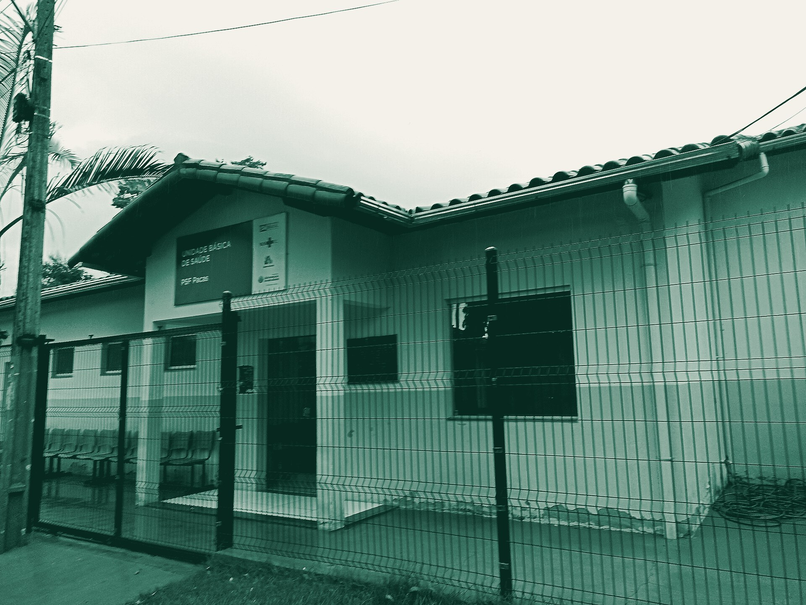
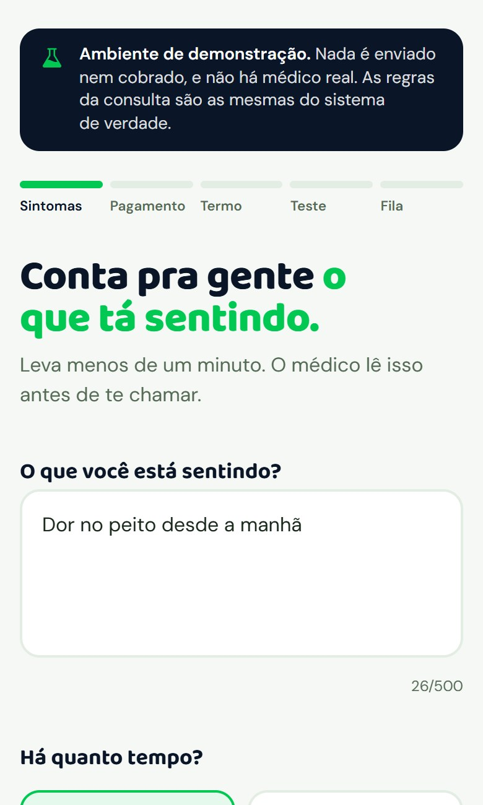
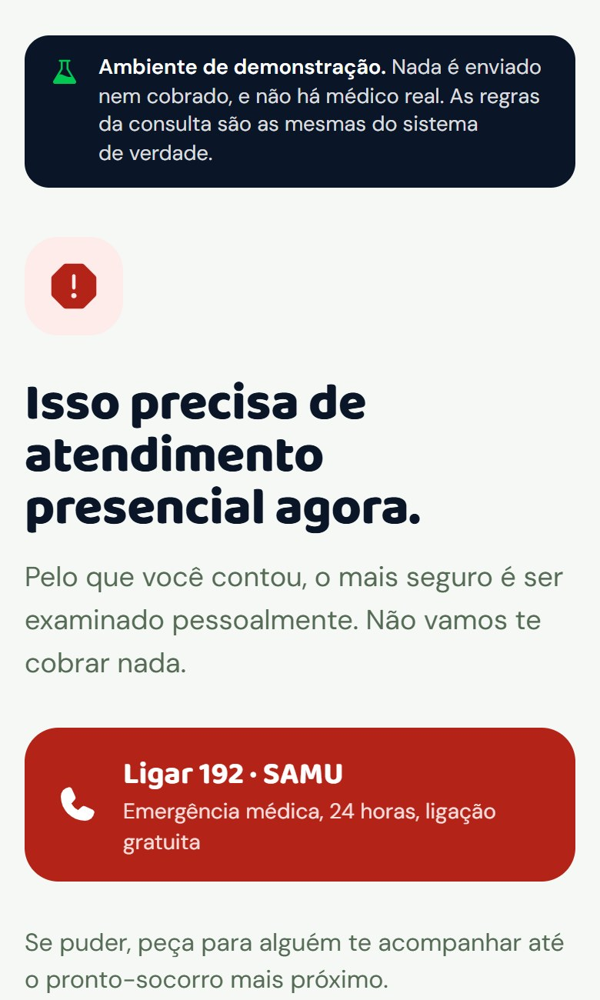
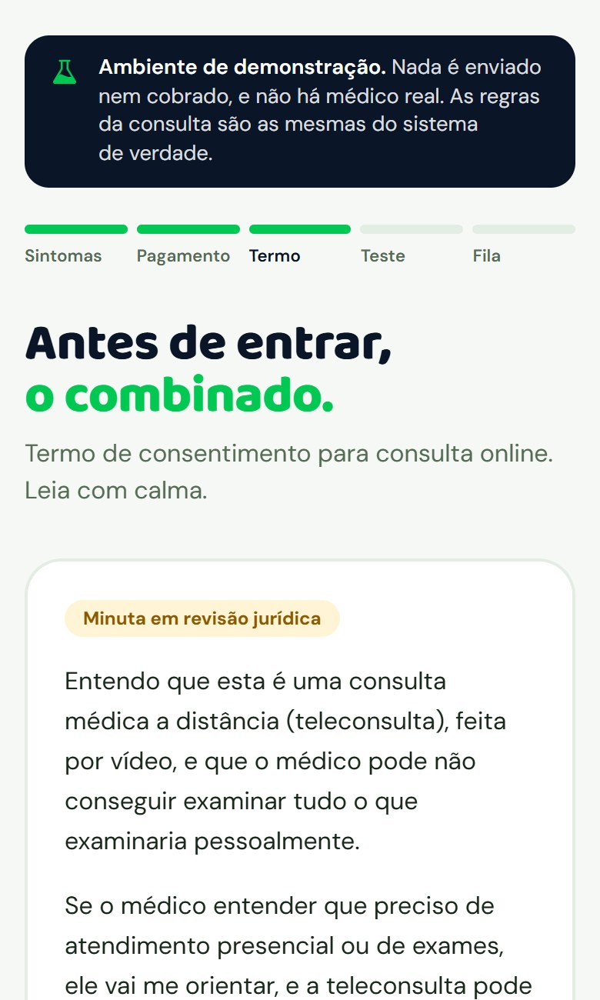

Renovação de receita de uso contínuo
Queixa aguda simples
Condições crônicas e ciclos de vida
Seguimento de atendimento recente
Sistematizar as etapas de implantação das teleconsultas na Atenção Primária do Conjunto de Favelas da Maré, destacando o sistema de governança e os resultados preliminares.
operações policiais na Maré em 2024
dias com atendimentos de saúde suspensos no ano
consultas interrompidas a cada dia de suspensão
Mais de 124 mil pessoas vivem nas 15 favelas da Maré. Quando a unidade fecha, o acompanhamento é interrompido. O estudo descreve a teleconsulta como forma de manter esse acompanhamento.
| Modalidade | Quem participa | Onde aparece no SUS |
|---|---|---|
| Teleconsulta | Profissional e usuário | Objeto do artigo: equipes da Maré com moradores cadastrados |
| Teleconsultoria | Dois profissionais, sem o usuário | PEC: compartilhamento do cuidado e videochamada |
| Teleinterconsulta | Dois profissionais, com o usuário | PEC: videochamada (versão 5.3) |
| Telemonitoramento | Equipe acompanha a condição a distância | Resolução CFM nº 2.314/2022 |
A Atenção Básica é a porta de entrada preferencial do SUS e coordena o cuidado na rede. A PNAB já prevê “ferramentas de telessaúde” no processo de referenciamento.
Estudo de caso descritivo, com relato de experiência institucional
4 das 6 clínicas da família da Maré, Rio de Janeiro
Novembro de 2024 a junho de 2025 (8 meses)
Documentos institucionais e registros do prontuário eletrônico
Governança (documentos, atores, fluxogramas) e perfil das teleconsultas
Google Meet, prontuário municipal e app minhasaude.rio
Diretrizes, recursos e acompanhamento técnico
Operação, capacitação e tecnologia
Método, formação e avaliação
Organização comunitária: escuta e mediação no território
O PEC está implantado em 95% dos municípios paraibanos. A teleconsulta deve ser registrada no campo Plano do SOAP com o código:
Protocolo de elegibilidade, apoio do ACS, plataforma institucional e direito de recusa do usuário.
Participei do desenvolvimento de um protótipo de plataforma privada de teleconsulta, projeto de um colega, em modo de demonstração.



| Protótipo privado | Teleconsulta na Maré (SUS) | |
|---|---|---|
| Acesso | Pagamento por consulta | Cadastro na área da unidade |
| Quem atende | Médico disponível na fila | Profissional da equipe de referência |
| Uso principal | Queixa aguda, atendimento único | Seguimento e crônicos (91%) |
| Registro | Prontuário da plataforma | Prontuário eletrônico da unidade |
| Depois da consulta | O atendimento termina | O cuidado continua na unidade e na rede |
Na Maré, a teleconsulta acompanha o vínculo com a equipe, como pedem a longitudinalidade e a coordenação do cuidado da PNAB.
| PNAB 2017 | O que o artigo mostra | Ponto de atenção |
|---|---|---|
| Universalidade | Acesso a partir de casa | Depende de aparelho e internet |
| Equidade | Implantado em território vulnerável | 60 anos ou mais: 12% dos atendimentos |
| Integralidade | Seguimento, crônicos e ciclos de vida | Exame físico continua presencial |
| Territorialização | Só moradores cadastrados na área | — |
| Longitudinalidade | 91% seguimento e crônicos | Efeito sobre o vínculo não medido |
| Coordenação do cuidado | Registro no prontuário da unidade | Vídeo em plataforma externa |
| Participação da comunidade | Redes da Maré na governança | — |
Considero o artigo útil como guia de implantação: mostra quem participa, em que ordem e para que a ferramenta foi usada. Como evidência, é limitado. Não mede desfechos nem mostra o que ocorreu nos dias de unidade fechada, que é o seu principal argumento.
O protótipo me mostrou o contraste: sem uma equipe de referência, a teleconsulta resolve uma queixa, mas não acompanha a pessoa ao longo do tempo, que é o que a PNAB espera da Atenção Básica.
O registro em SOAP no PEC, com o código de procedimento, garante continuidade e conta como produção.
Sinais de alarme, consulta presencial a cada 180 dias e direito de recusa.
Celular, internet e quem ajuda em casa são condição de acesso.
Dado de saúde é dado sensível. Usar plataforma institucional, não aplicativo pessoal.
BRASIL. Lei nº 13.709, de 14 de agosto de 2018. Lei Geral de Proteção de Dados Pessoais (LGPD). Diário Oficial da União: seção 1, Brasília, DF, 15 ago. 2018.
BRASIL. Lei nº 13.787, de 27 de dezembro de 2018. Dispõe sobre a digitalização e a utilização de sistemas informatizados para a guarda, o armazenamento e o manuseio de prontuário de paciente. Diário Oficial da União: seção 1, Brasília, DF, 28 dez. 2018.
BRASIL. Lei nº 14.510, de 27 de dezembro de 2022. Altera a Lei nº 8.080, de 19 de setembro de 1990, para autorizar e disciplinar a prática da telessaúde em todo o território nacional [...]. Diário Oficial da União: seção 1, Brasília, DF, 28 dez. 2022.
BRASIL. Ministério da Saúde. Gabinete do Ministro. Portaria nº 2.436, de 21 de setembro de 2017. Aprova a Política Nacional de Atenção Básica, estabelecendo a revisão de diretrizes para a organização da Atenção Básica, no âmbito do Sistema Único de Saúde (SUS). Diário Oficial da União: seção 1, Brasília, DF, n. 183, p. 68, 22 set. 2017.
BRASIL. Ministério da Saúde. Secretaria de Atenção Primária à Saúde. Nota Técnica nº 11/2024-CAIN/CGESCO/DESCO/SAPS/MS. Brasília, DF: MS, 2024. Disponível em: https://www.gov.br/saude. Acesso em: 18 nov. 2026.
BRITTO, F. A. et al. Teleconsulta na atenção primária: modelo conceitual e implementação em territórios de favelas. Ciência & Saúde Coletiva, Rio de Janeiro, v. 31, n. 5, 2026. DOI: https://doi.org/10.1590/1413-81232026315.24292025.
CELUPPI, I. C. et al. Dez anos do Prontuário Eletrônico do Cidadão e-SUS APS: em busca de um Sistema Único de Saúde eletrônico. Revista de Saúde Pública, São Paulo, v. 58, art. 23, 2024. DOI: https://doi.org/10.11606/s1518-8787.2024058005770.
CONSELHO FEDERAL DE MEDICINA. Resolução CFM nº 2.314, de 20 de abril de 2022. Define e regulamenta a telemedicina, como forma de serviços médicos mediados por tecnologias de comunicação. Diário Oficial da União: seção 1, Brasília, DF, n. 84, p. 227, 5 maio 2022.
KROLL, R. Atenção Primária avança em saúde digital, mas telessaúde e interoperabilidade ainda são desafios. Futuro da Saúde, 9 jul. 2025. Disponível em: https://futurodasaude.com.br/atencao-primaria-saude-digital-nas-ubs/. Acesso em: 18 nov. 2026.
PARAÍBA lidera ranking nacional de implantação do prontuário eletrônico do e-SUS APS. Paraíba Business, João Pessoa, 30 jun. 2025. Disponível em: https://paraibabusiness.com.br. Acesso em: 18 nov. 2026.
SOIBELMAN, G.; FORNAZIN, M.; ALBUQUERQUE, M. V. Saúde digital na Atenção Primária à Saúde no Brasil: experiências desenvolvidas no Sistema Único de Saúde entre 2018 e 2022. Saúde em Debate, Rio de Janeiro, v. 49, n. esp. 1, 2025. DOI: https://doi.org/10.1590/2358-28982025E110000P.
TÚLLIO F. Unidade Básica de Saúde José Vicente Soares Filho. 2023. 1 fotografia. Wikimedia Commons, CC BY-SA 4.0. Disponível em: https://commons.wikimedia.org. Acesso em: 18 nov. 2026.